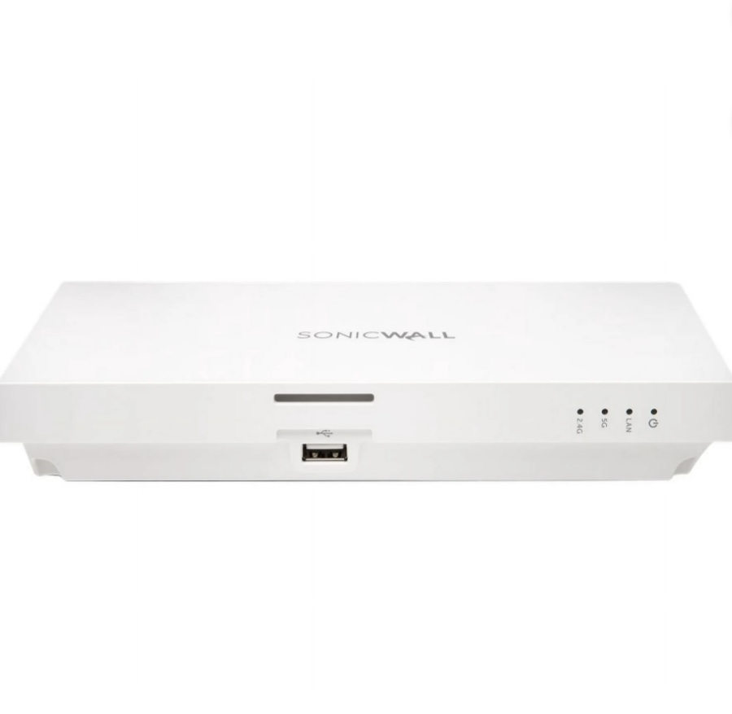
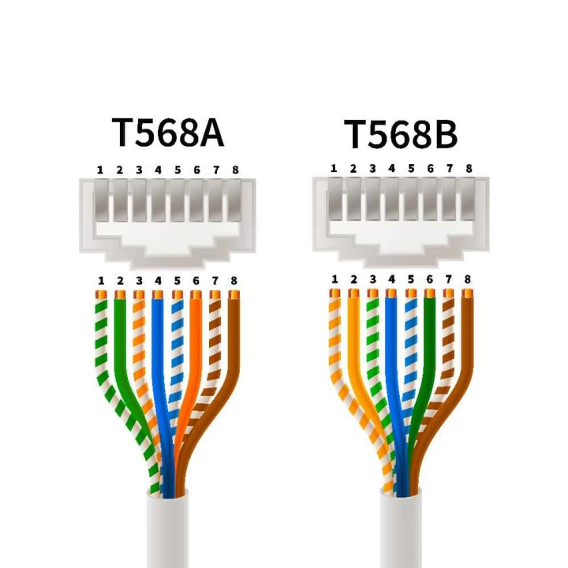
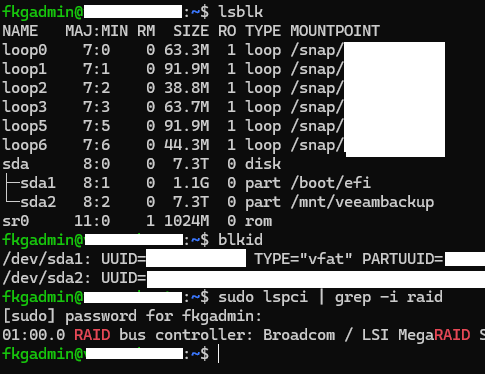
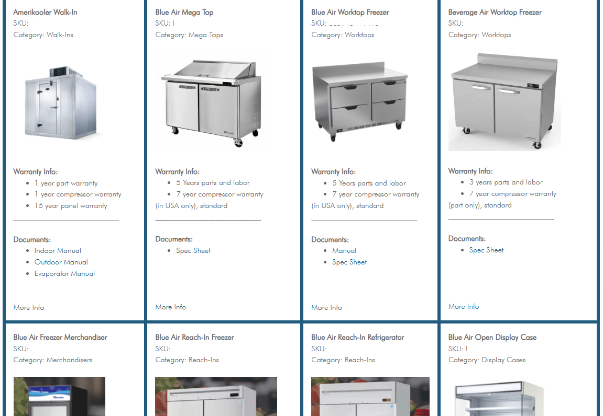
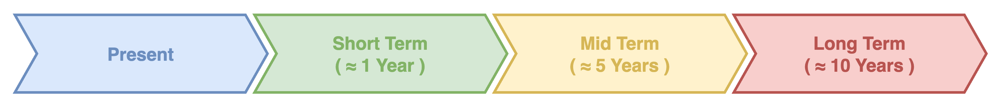
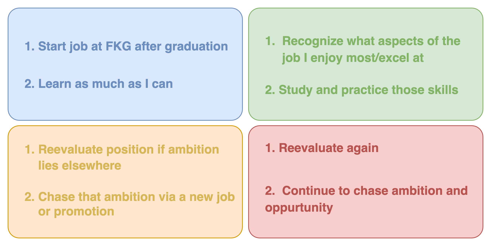

Kyle Donovan
IT Specialist • Data Analyst
IT Specialist • Data Analyst
During my internship at FKG I aided in a large scale network expansion. We placed new wireless access points aroud the building/warehouse, then cut and ran ethernet cables from several switches to the new WAPs.



I also helped configure a Hardened Repository with RAID5 during my internship at FKG. The repository was created with the software "Veeam" and ensures continuous backups of all non-cloud based company data.


While interning at FKG I also helped design and create a site that contains important maintenance and warranty information about the equipment. It is accessed through a QR code sticker that is put on every appliance before it is shipped, and was made with the Elementor plugin in WordPress.




My go to site for a quick syntax questions in any programming language. Their knowledge base is extensive, accurate, and well organized.
This is the book I initially learned JavaScript through. Although during this internship most of the JS was written via WordPress plugins, it has still been immensly helpful in understanding and troubleshooting those plugin's scripts.
A GitHub repository filled with all different kinds of PowerShell scripts. I utilized this alot in my internship within the NinjaOne RMM.
The official community discord for the NinjaOne RMM has been extremely helpful in getting the most out of the service for my internship. There are various channels with incredibly detailed documentation and tutorials, as well as discussion channels for asking and answering questions. One specific task I utilized the discord for was improving a automation PowerShell script (within NinjaOne) that was meant to filter various kinds of updates and schedule them according to the filters. When I hit a wall, unable to identify why the script wasn't working, I posted it to the discord's "review-my-script" channel. Another user promptly responded and helped me get the script to work.